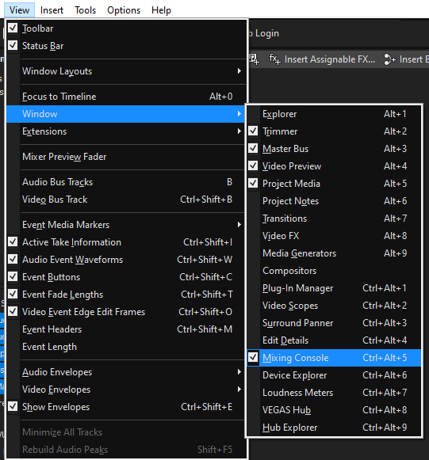
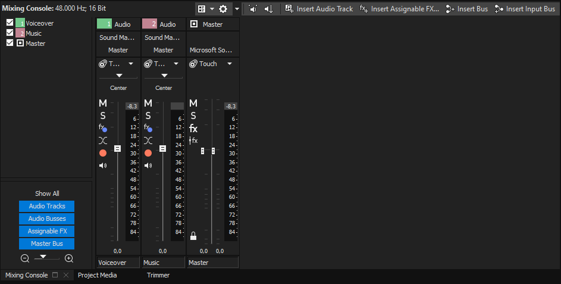
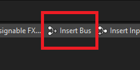
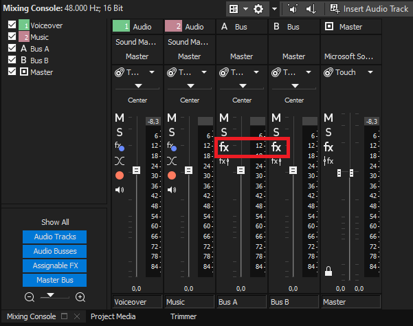
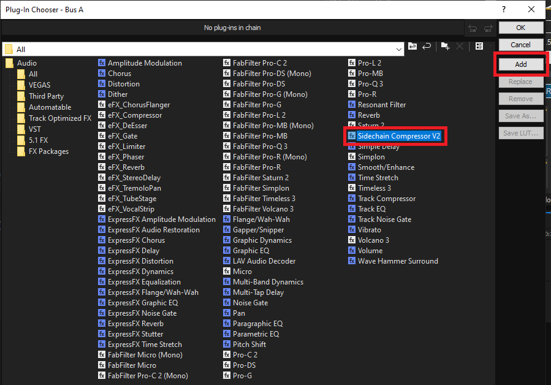
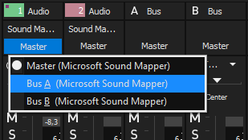
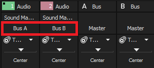
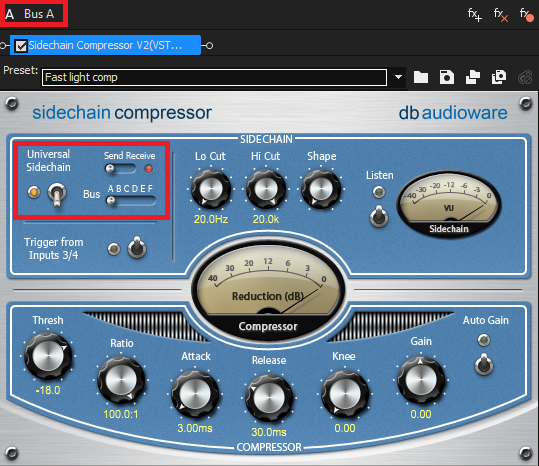
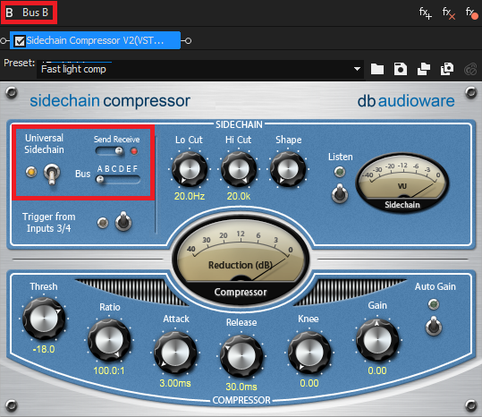

For a month or two I’ve been using sidechain compression in most of the vids I’ve edited, the result is super satisfying and lets your music choices shine without having to worry about the voiceover getting completely crushed by the songs.
Just in case you don’t know what sidechain compression is, just imagine a regular compressor that gets triggered by the signal of another track. So for example, a music track (B) will get compressed only when the voiceover (A) is playing, and when the voiceover is muted, the music won’t get compressed at all.
After some research I could only find a couple of solutions for Vegas Pro, one that is native to the software, but that I really don’t trust / I find too much work for such a simple thing. And another one that requires a plugin called Sidechain Compressor V2 by dB Audioware, it’s 79 bucks, but you can get it by other means.
It’s very serviceable, but for some reason it won’t ever save changes if you close Vegas Pro, so you have to either save the state of the plugin as a preset before closing the program, or just take a screenshot so you remember next time you open the project.
I’ve also read that you can do this with a FabFilter plugin, but I haven’t figure out how yet, and I’m honestly fine with the proccess I use now.
How to use the compressor
The proccess is very straightforward, just create one track that will be used as the trigger for the compressor (voice track), and at least another track that will affected by it (music track, for example), then go to View > Window > Mixing Console or just press Ctrl+Alt+5 to open the Mixing Console.
 
In the Mixing Console, you have to create 2 Buses (A and B) by clicking on Insert Bus, and then clicking on the FX icon to open the effects list. Search for the Sidechain Compressor V2 plugin and add it to both buses.
  
Before doing anything with the compressor, we need to “assign” the buses to the different tracks we want for this effect. We will assign “Bus A” to the tracks that will trigger the compressor, and “Bus B” to the tracks that will be affected by the compressor. In this example, we want the voiceover in Bus A, and the music in Bus B, you can assign the buses by just clicking in the “output” option (by default this option will be “Master”).
|  |  |
|---|
Now, in the compressor, we have to turn on “Universal Sidechain” in both Buses. Then we just have to set Bus A to “Send” and Bus B to “Receive”.
|  |  |
|---|
And that’s basically all there is to it, only thing left is to tweak stuff around but you only want to modify the compressor in Bus B, the compressor we added to Bus A is just to send the signal to Bus B
I won’t explain all the knobs and options in the compressor, you can look everything up in google, there’s a lot of information on compressors and what all the settings and options are. I’ll just leave you with a quick example of how the final result sounds like.
Parameters I’ve changed:
- Threshold: -26
- Ratio: 10:1
- Release: 1000ms
This is how it sounds without the compressor:
Obviously the music eats up the voiceover, so we’d have to lower the music much more than that. This way, the music will be too low or too high sometimes unless we manually increase or decrease the levels when we need it, which is a lot more work than using the compressor to do everything for us.
Of course there’s a lot more to this and I’m still a noob at everything related to audio.
The results will be a lot better using Equalizers and a bunch of other effects, but just by using audio ducking you have a lot more freedom to choose different kind of songs for the project and overall the video will flow a lot better because you won’t have to be as careful with the voice track being too loud / quiet.
I hope this helps someone, I’ve found a bunch of people mentioning this plugin in a couple of forums but I haven’t seen any visual guides for it. If you have any questions you can hit me up